دوران حرفهای دو و میدانی منوچهر شمشیری
چگونه یک کشتیگیر به قهرمان دوی سرعت تبدیل شد
در دهه ۴۰ شمسی، پس از یک برخورد ناعادلانه در یک مسابقه کشتی استانی، او به پیشنهاد مربی کشتیاش به طور اتفاقی وارد یک مسابقه دوی ۱۰۰ متر شد.
بدون هیچ تجربه قبلی در دو و میدانی و در حالی که هنوز دوبند و کفشهای کشتیاش را به تن داشت، در مسابقات قهرمانی دو و میدانی استان شرکت کرد.
در همان اولین حضور خود در دو و میدانی، استعداد طبیعی و برتری چشمگیرش نسبت به رقبا، مقام اول و مدال طلا را برایش به ارمغان آورد.
این موفقیت او را بر آن داشت تا کشتی را کنار بگذارد و دو و میدانی را به طور جدی دنبال کند.
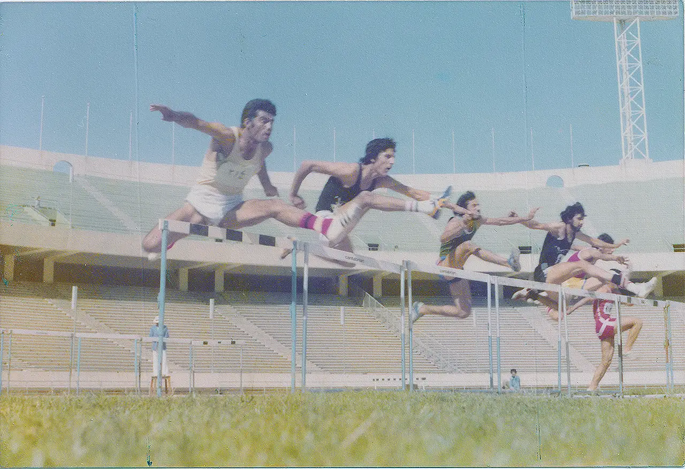
منوچهر شمشیری: ستارهای در حال ظهور در دو و میدانی ایران
ترجمهای از یک بریده روزنامه که روزهای آغازین ظهور منوچهر شمشیری در دو و میدانی را توصیف میکند، به شرح زیر است:
منوچهر شمشیری که از ویژگیهای جسمانی استثنایی، استعداد طبیعی و قدرت فوقالعادهای برخوردار است، باید به عنوان چهرهای نوظهور شناخته شود که به سرعت در مسیر رسیدن به بزرگی در دو و میدانی ایران قرار دارد.
مدت کوتاهی از زمانی که او کشتی را کنار گذاشت و دو و میدانی را به عنوان مسیر جدید خود انتخاب کرد، میگذرد. با این حال، حتی در همین دوره کوتاه تمرینات اختصاصی، پیشرفت شگفتانگیز او به وضوح به آیندهای روشن و امیدوارکننده اشاره دارد. نمیتوان فکر نکرد که اگر او از همان ابتدا وارد این رشته میشد، هماکنون به عنوان یکی از ستارگان اصلی دو و میدانی ایران میدرخشید. در عوض، او پس از سالها تلاش سخت روی تشک کشتی، به تازگی این سفر جدید را آغاز کرده است.
در شهر دورافتاده بیرجند، نام منوچهر شمشیری از قبل نامی آشنا و محترم است. هیکل او یک سرمایه نادر است که قدرت عظیم و پتانسیل ورزشی خام را از خود ساطع میکند. او با قد ۱.۹۰ متر و وزن ۷۶ کیلوگرم، اندامی متعادل و قدرتمند دارد که گواهی زندهای بر سالها نظم و تلاشی است که در کشتی سرمایهگذاری کرده است.
شمشیری در مسابقات اخیر نیروهای مسلح شاهنشاهی عملکردهای برجستهای از خود نشان داد. در دوی ۱۱۰ متر با مانع، در حالی که در کنار بهرام میری، رکورددار ملی و یکی از برجستهترین چهرههای دو و میدانی ایران، به رقابت میپرداخت، با زمان ۱۶ ثانیه قهرمان شد. او همچنین در دوی ۴۰۰ متر با مانع مقام اول را کسب کرد. قابل توجه اینکه، درست روز بعد در یک مسابقه آزمایشی، رکورد شخصی خود را در دوی ۱۱۰ متر با مانع به ۱۵.۸ ثانیه کاهش داد و رکورد خود را از روز قبل شکست.
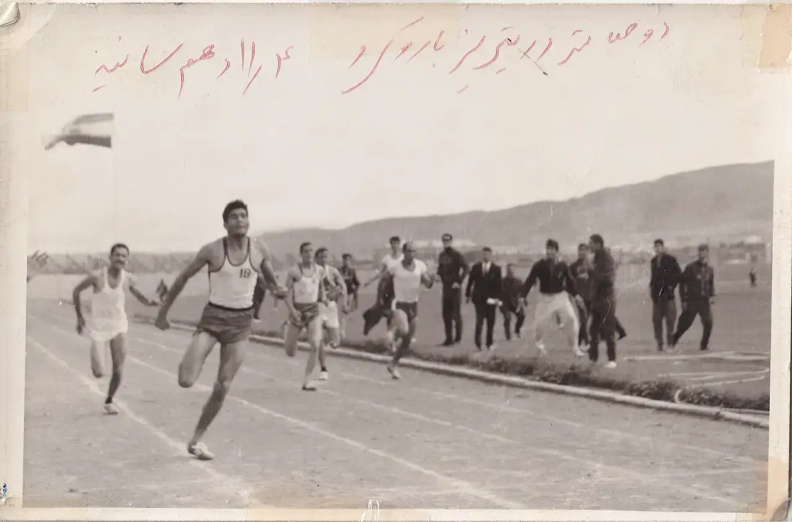
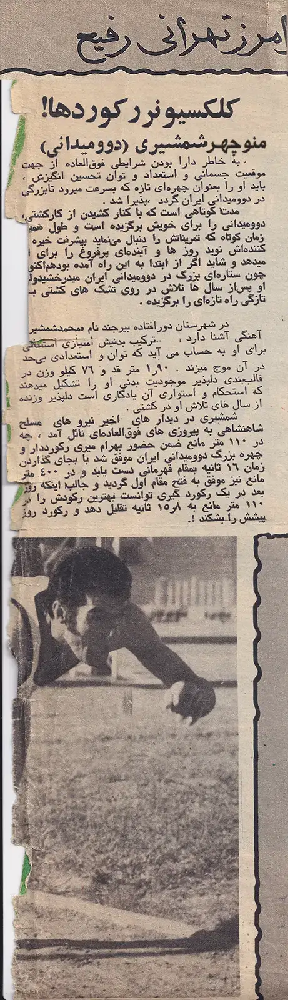
رقابت در بالاترین سطوح — از مسابقات قهرمانی آسیا تا مسابقات جهانی نظامیان.
منوچهر شمشیری دو و میدانی را در بالاترین سطوح دنبال کرد و در مسابقات قهرمانی آسیا و مسابقات جهانی نظامیان با موفقیت به رقابت پرداخت.
رشته امضای او — جایی که رکوردهای ملی را ثبت کرد و در سطح بینالمللی رقابت کرد.
رشتهای طاقتفرسا که استقامت، تکنیک و انگیزه رقابتی او را به نمایش میگذاشت.
منوچهر شمشیری، یکی از مدالآوران بازیهای آسیایی ۱۹۷۴
منوچهر شمشیری به عنوان یکی از اعضای تیم ملی دو و میدانی، در بازیهای آسیایی ۱۹۷۴ تهران نماینده ایران بود.
علیرغم ترجیح شخصیاش، او توسط کادر فنی برای رقابت در رشته دهگانه منصوب شد.
او در چهار ماده دوی دهگانه، به مقامهای اول تا سوم دست یافت.
با این حال، از آنجایی که چندین رشته دیگر دهگانه — مانند پرتاب وزنه، پرتاب نیزه، پرتاب چکش، پرش ارتفاع و پرش سهگام — با تخصص ورزشی او همخوانی نداشت، در نهایت در رشته دهگانه به مقام سوم آسیا دست یافت.
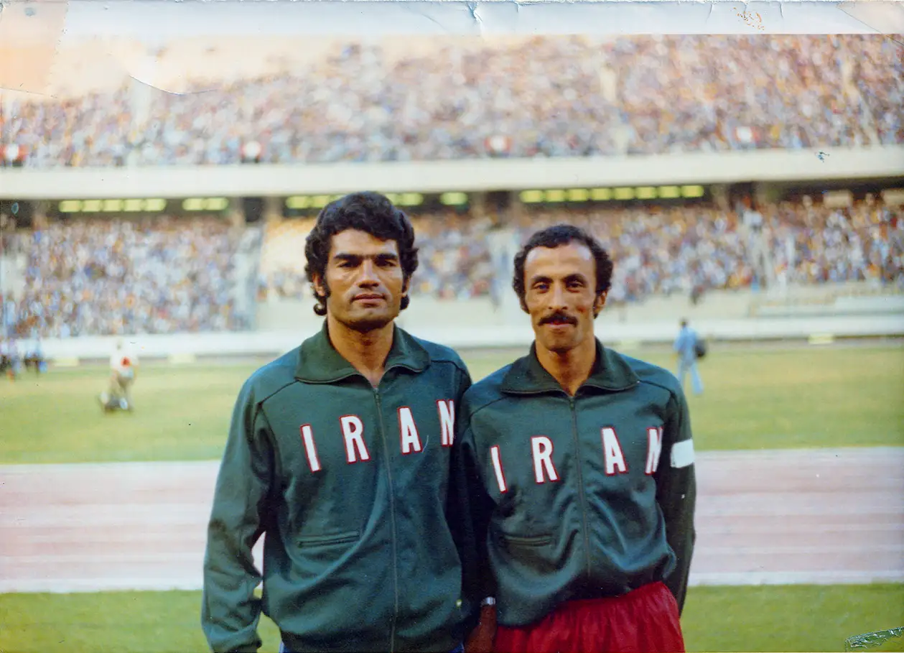
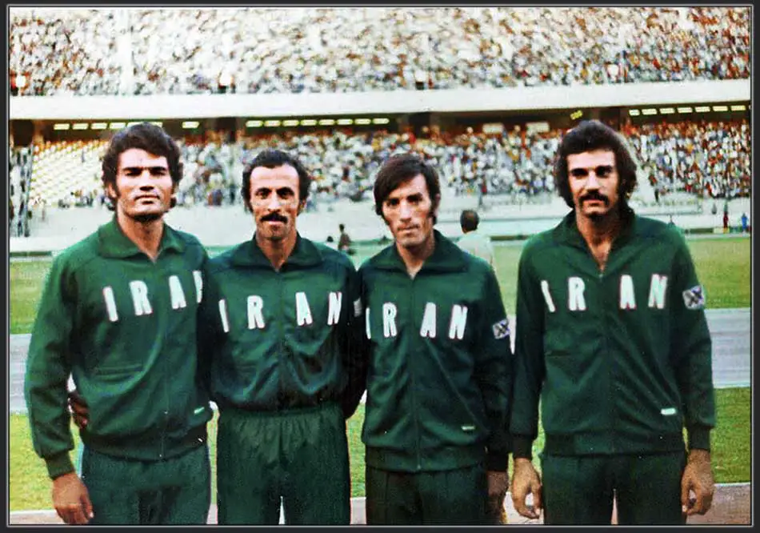
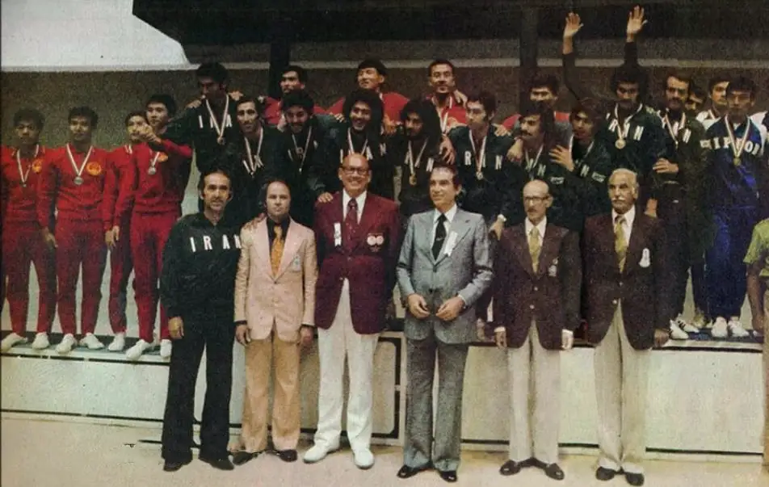


پشت هر مدال — سالها نظم، عرق و آمادهسازی بیوقفه.
مدتها پیش از سکوهای آسیا و جهان، منوچهر شمشیری میراث خود را در زمینهای تمرین ایران بنا نهاد. او از طریق ساعتهای بیشمار تمرین، مسابقات کشوری و قهرمانیهای استانی، سرعت، تکنیک و قدرت ذهنیای را پرورش داد که بعدها مسیر حرفهای او را در عرصه بینالمللی رقم زد.
این عکسها لحظاتی از جلسات تمرین و مسابقات کشوری او را ثبت کردهاند — نگاهی نادر به نظم و ارادهای که یکی از بزرگترین ورزشکاران دو و میدانی ایران را شکل داد.
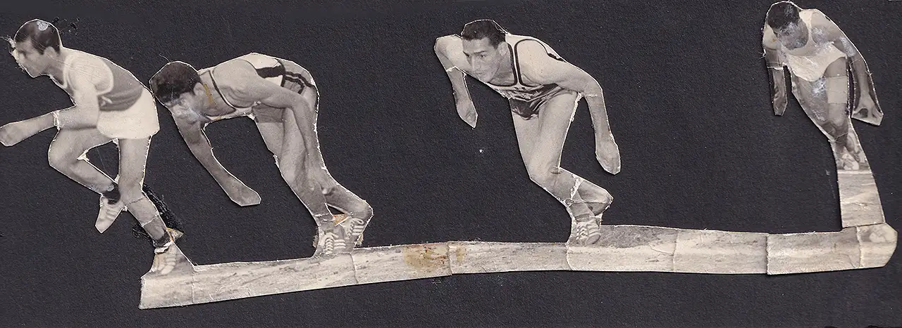
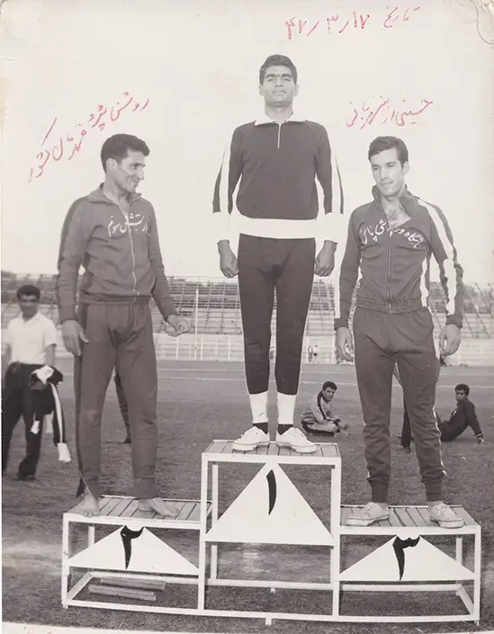
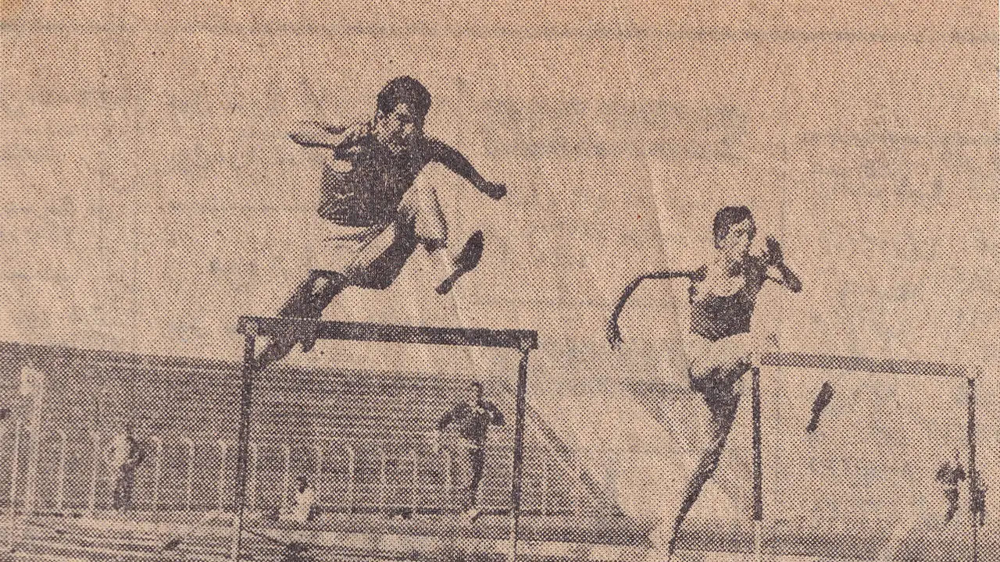
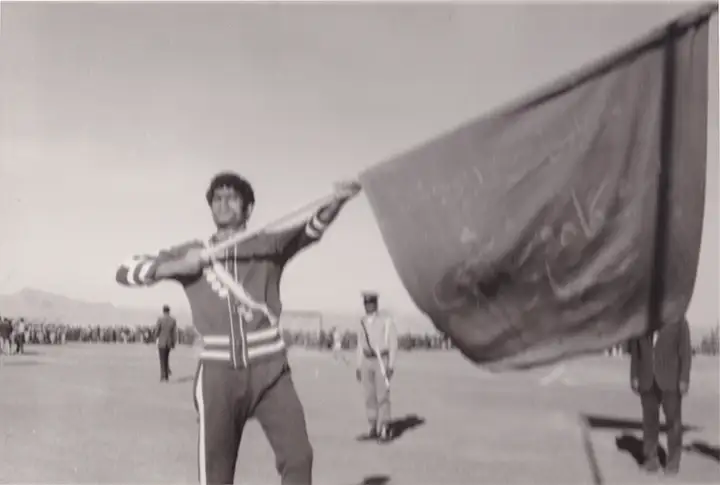
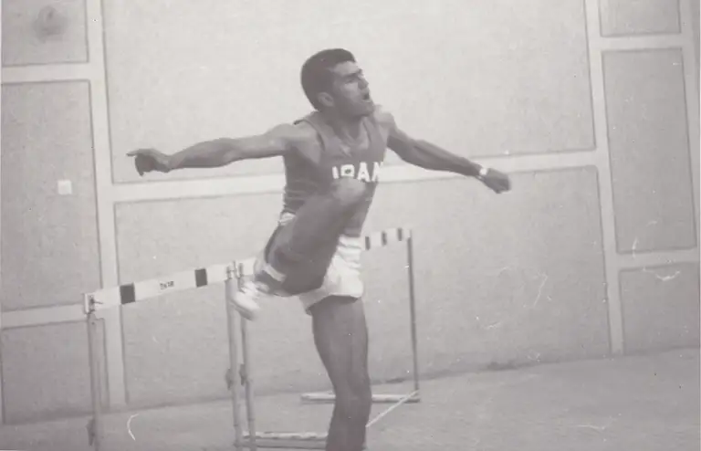
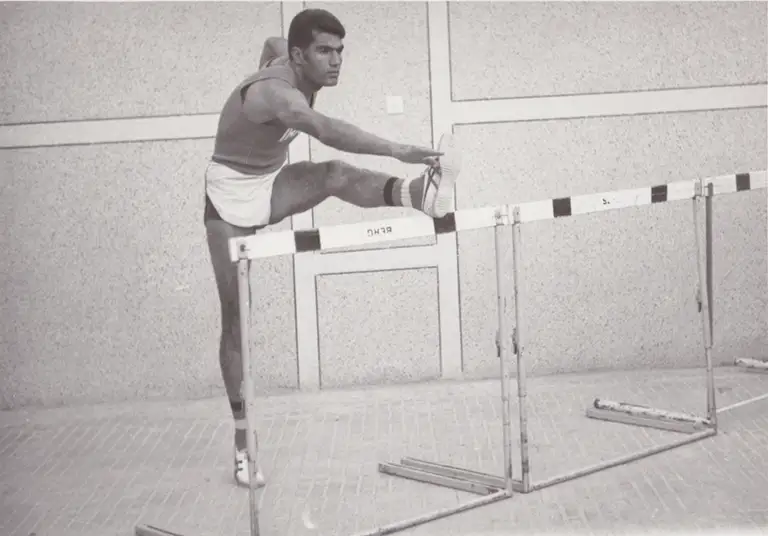